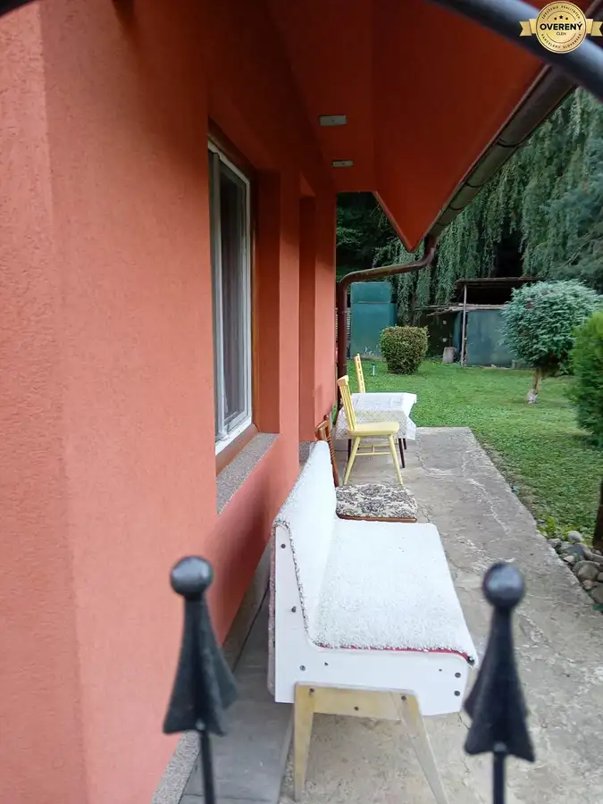
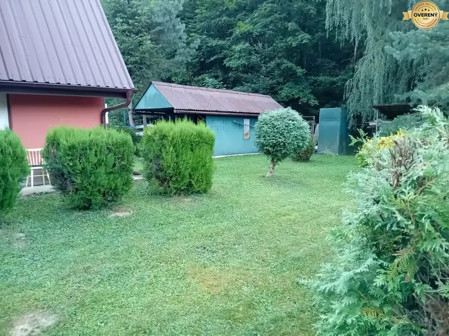
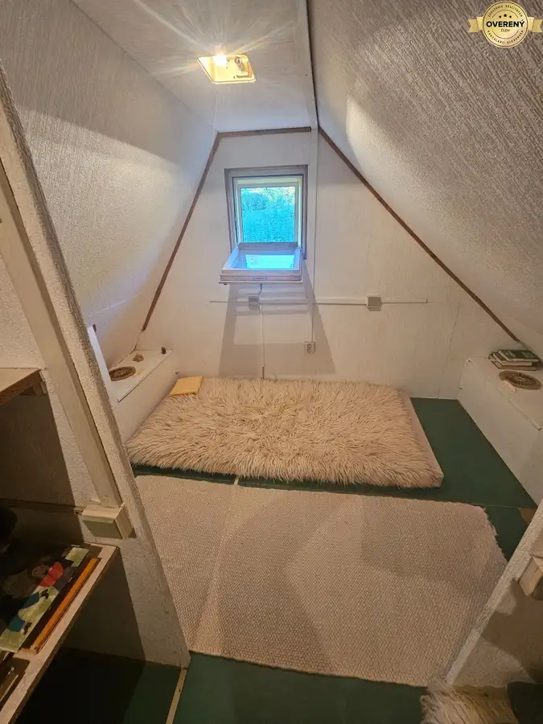
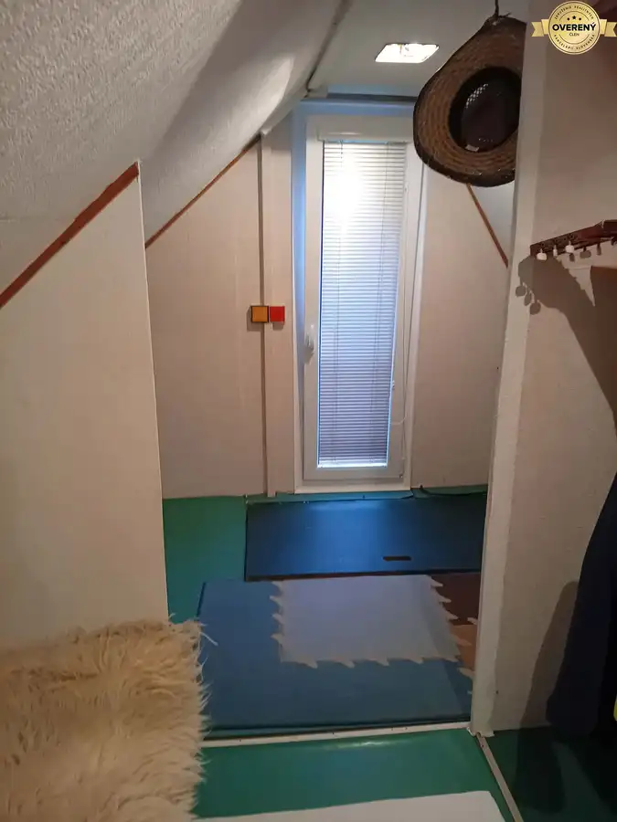
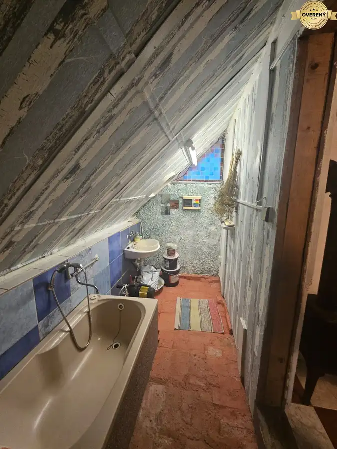

Na predaj záhrada s chatou
Cemjata






- Dispozícia1-izbový
- Plocha29 m²
- Poschodie0.
- Stavúplne prerobený
- Vlastníctvoosobné
O nehnuteľnosti
Hľadáte miesto, kde si po práci oddýchnete, cez víkend si vychutnáte rannú kávu pod stromami alebo budete pestovať vlastné ovocie a zeleninu?
Ponúkame na predaj krásnu záhradu s dreveným záhradným domčekom v vyhľadávanej lokalite Cemjata.
Predstavte si posedenie na terase s priateľmi alebo s rodinou ideálna na relax v prírode. Zažite atmosféru kľudu v príjemnom prostredí obklopený zeleňou.
Nehnuteľnosť sa nachádza na svahovitom pozemku s výmerou 861 m2 s bazénom. Na krásne upravenom pozemku okrem chatky a bazénu je garáž, záhradné posedenie s kozubom, splachovacie WC, prístrešok na drevo.
Pozemok ponúka súkromie, množstvo zelene a pokoj.
Súčasťou je aj drevená záhradná chata v ktorej je elektrika a voda, s rozlohou 29 m², ktorá poskytne vhodný na oddych. .
Chata pozostáva s kuchyne spojenej s obývačkou kde je aj liatinová piecka, kúpeľne a na poschodí je spacia časť s veľkým úložným priestorom. Pred 5 rokmi prebehla rekonštrukcia. Nová strecha, komín, koninova vložka, zateplenie 15 cm polystyrénom, nové čerpadlo a pod.
Veľkou výhodou tejto nehnuteľnosti je studňa, z ktorej je privedená voda do chaty, WC a je aj rozvod na polievanie pozemku.
Chata sa nachádza v blízkosti zastávky MHD
Nehnuteľnosť ponúka príležitosť vytvoriť si vlastný kúsok raja len pár minút od ruchu mesta.
Cena: 99 000€ pri rýchlom jednaní je možná dohoda na cene
V prípade záujmu ma neváhajte ma kontaktovať na tel.č.
Parametre
- Rozloha pozemku
- 861 m²
- Zastavaná plocha
- 29 m²
- Úžitková plocha
- 29 m²
- Poschodie
- prízemie
- Počet izieb
- 1
- Vlastníctvo
- osobné
- Stav
- úplne prerobený
- Status
- aktívne
- Voda
- studňa
- El. napätie
- 230/400V
- Plyn
- nie
- Kanalizácia
- nie
- Internet
- nie
- Kúpeľňa
- vaňa
- Vykurovanie
- vlastné - pevné palivo
- Pivnica
- nie
- Garáž
- áno - 1 auto
- Postavené z
- Zmiešané
- Zariadenie
- zariadený
- Zateplený objekt
- áno
- Strecha
- po rekonštrukcii
- Bazén
- exteriérový
- Krb
- áno
- Klimatizácia
- nie
- Energetický certifikát
- nie
- Terén
- svahovitý
- Prístupová cesta
- neupravená cesta
- Dátum zverejnenia
- 2026-09-04